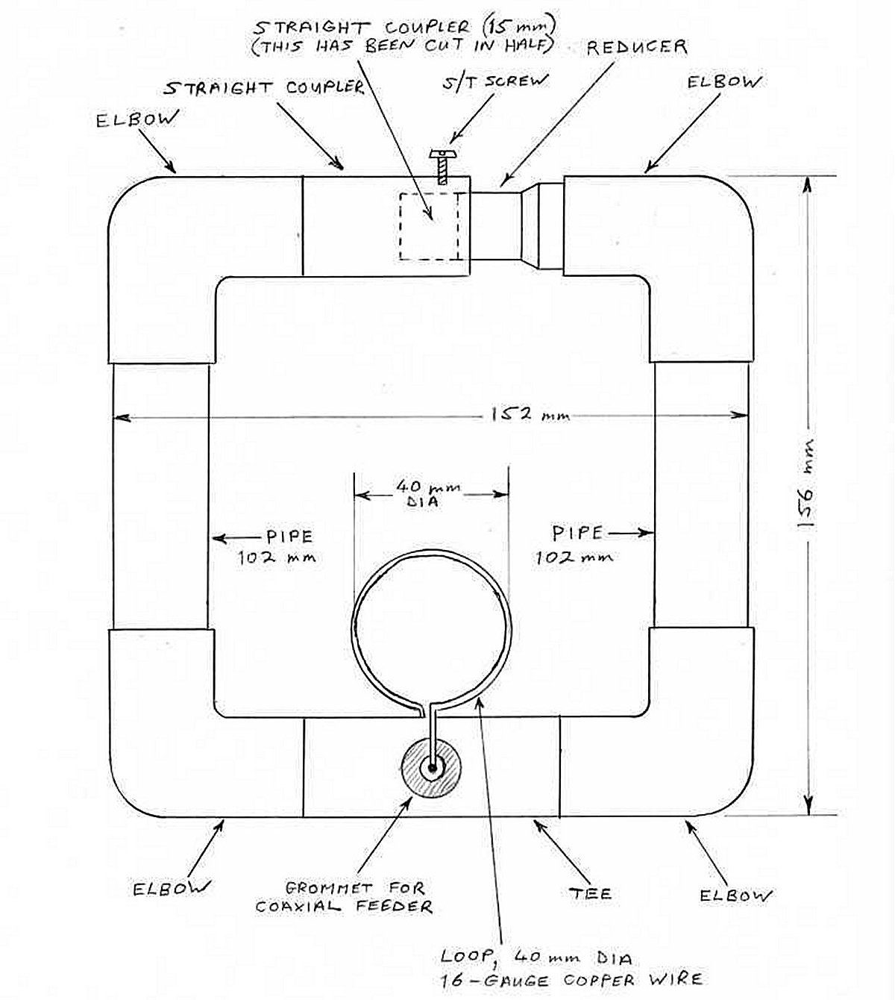
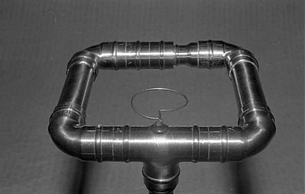

|
Experimental VHF Magnetic Loop Antenna for 2 Metre Amateur Band
The antenna is constructed from standard copper water pipe and plumbing fixtures available from most hardware stores. It functions on the principle of the magnetic loop which is, essentially, a series-tuned resonant circuit in which the inductor is a single-turn loop. A high voltage is developed across the capacitive gap, hence a voltage standing wave is developed around the periphery of the loop. The efficiency of the antenna depends upon the generation of high current and voltage. Hence the Q will be high and the bandwidth correspondingly narrow (typically 200 MHz). The resonant frequency is designed to be 144.30 which is the amateur s.s.b. calling frequency. To make the Q high the losses must be kept very low, and for this reason the antenna is constructed from copper water pipe of 22 mm diameter. Sturdy construction is also necessary to provide the necessary mechanical stability. The antenna is constructed to the minimum size possible. It is believed that the size could not be any greater because the capacitance necessary for resonance would become impracticably small. Therefore the constructor is recommended to keep closely to the dimensions shown below and to construct the antenna as accurately as possible. |

|
Magnetic Loop Antenna showing dimensions 
(2) Drill holes in the tee for the feeder grommet, and for the screw which will secure the solder tag for connecting the coaxial cable braid. (3) Assemble the antenna using the elbows and the tee, but on the capacitive gap side of the square substitute a 102 mm long pipe in place of the capacitive gap components. (4) Solder the joints, but do not solder those holding the substitute pipe. (5) Make two saw cuts in the substitute pipe, and remove and discard the pieces. Then assemble the capacitive gap components in their final location. Do not solder the 22-to-15 mm dia. reducer at this time. (6) In order to make final adjustments to the resonant frequency, a very small self-tapping screw must be screwed into the 22 mm straight coupler, close to the end. The screw should protrude about halfway across the airgap to the 22-to-15 mm dia. reducer. Use a screw without a sharp point at its end, or otherwise file off the point. (7) The antenna is supported by a 15 mm dia. vertical pipe which is soldered to another 22-to-15 mm dia. reducer which is joined to the tee at right-angles to the the plane of the loop. This vertical pipe may be attached to a magnetic mount (for example) using a suitable plumbing fixture with the antenna at about one quarter-wave above the magnetic mount. Originally it was found that the vertical supporting pipe was slightly "hot" to r.f. Therefore a short plastic tube was used to insulate the antenna from the vertical pipe (although this is not essential). The plastic tube was a 22 mm dia. straight coupler intended for waste water. (8) The coaxial cable is coupled to the antenna by an inductive loop of about 40 mm diameter. Use 16 gauge copper wire soldered to the same tag to which the coaxial cable braid is connected.
The final tuning adjustment must be made while transmitting. Connect a VSWR meter between the transmitter and antenna. Be very careful, because r.f. output transistors can easily by destroyed by operating a transmitter into a gross mismatch. Therefore use a little power as possible when making the tuning adjustment. One way to generate low power (in single sideband. mode) is to whistle very softly into the microphone. The sensitivity control of the VSWR meter should be turned-up high. With the VSWR meter indicating reflected power the impedance match is is optimised by positioning the 22-to-15 mm dia. reducer. Finally secure the reducer to the elbow by soldering. Do this very gently and without further moving it. (This may be difficult because flux cannot be applied for this operation, so make sure that the inner and outer surfaces are cleaned beforehand with steel wool). The closeness of the the antenna to its correct resonant frequency may be tested by moving a finger near to the capacitive gap, whereupon the VSWR meter should indicate a change in the reflected power. If necessary, adjust the resonant frequency with the self-tapping screw already inserted in the 22 mm straight coupler. Another means of tuning the antenna if close to the correct frequency is to distort the structure very slightly, hence either increasing or reducing the capacitive gap.
Depending upon the application, the main disadvantage may be the narrow bandwidth of the antenna. This is about 200 kHz as measured between the frequencies around 144.30 MHz at which the VSWR = 1.5/1, giving a Q of around 720. This is the inevitable consequence of the low-loss construction upon which its efficiency depends. It is important to note that the antenna is experimental only and was intended simply to demonstrate the potential of the Magnetic Loop Antenna principle at VHF. It cannot be used outdoors in wet weather without suitable protection. This is because of the high voltage developed across the capacitive gap. The photograph shows the antenna mounted on the roof of a car by using a mag-mount. This is an earlier version in which the coaxial cable is connected to the antenna by gamma matching. This was found to be inferior to inductive coupling in terms of the resulting VSWR.
The compact size of the antenna may tempt an experimentor to use it in close proximity to the him/herself, especially when first tuning up. The possible harmful effects of electromagnetic radiation on the body are the subject of international concern. The experimentor is therefore advised to use the antenna with great caution, especially to use as little power as possible when tuning and to avoid unnecessary exposure at all times. In particular, a hand must NEVER be placed inside the loop with power applied. DON'T MICROWAVE YOURSELF! Link: VHF Communications MagazineVHF Communications was a quarterly magazine published between 1969 and 2013 especially for radio amateurs and professional RF engineers. It covered the VHF, UHF and Microwave bands. The magazine started as the English version of the German magazine UKW Berichte. Over the 45 years of publication it covered many topics from valve equipment through transistorised equipment to RF Integrated Circuits. The designs were published with full circuit diagrams and printed circuit layouts. Many theoretical topics were covered such as; antenna design, oscillator design, transmission theory and the practical use of modern RF modelling and design software. All the magazines are available as back issues or on DVD/CD and a full magazine index is available to download to locate any articles of interest. Some sample articles can be downloaded as pdf files. |